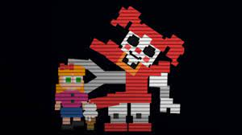
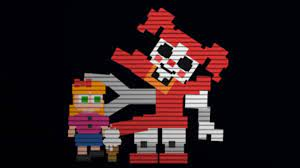
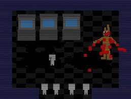
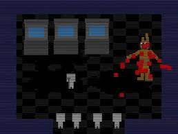
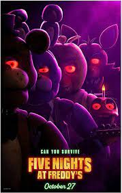

Deel 2: weet ik veel, er gebeuren dingen.
Iemand wordt opgegeten, doordat zijn broer hem in de bek van een robot gooit en de robot dichtbijt (bite of 83). Iemand wordt gedood, omdat ze naar een robot werd gelokt met ijs en gaat dood :) (dood zonder naam). Iemand gaat dood omdat een robot hem in zijn voorhoofd bijt, waardoor hij zijn fromtale kwab kwijtraakt (bite of 87).
Iemand gaat dood, William Afton, doordat hij in een robot-pak gaat, waarvan het endoskelet aan de kant is geschoven, maar het endoskelet schiet op zijn plek en hij gaat dood, maar hij gaat niet dood, en hij word dertig jaar later verbrand, maar hij gaat weer niet dood en word een paar jaar na dat weer verbrand. Maar hij is nog steeds niet dood en hij word weer jaren later verbrand, door een klein kind en zijn robotische vriend.
 

 

De eerste is de Bite of 83, de tweede de "Dood zonder naam", de derde de Bite of 87(waarschijnlijk, weten we eigenlijk niet) en de laatste is de dood van William Afton.
Deel 3: de FNaF film
De FNaF film is nog niet uitgekomen, maar ik kan wel een klein beetje vertellen. De film gaat over Mike Schmidt, die nachtwaker word bij de verlaten Freddy Fazbear's pizzeria, waar de robots leven, door de kinderen die erin zitten. De robots willen zijn zusje, Abby een van hun maken. In het begin van de film zijn er ook een paar tieners die naar de pizzeria gaan om het te onderzoeken, ofzo, meer kon ik niet echt uit de trailers halen.

Dit is de poster van de film, die dus nog moet komen